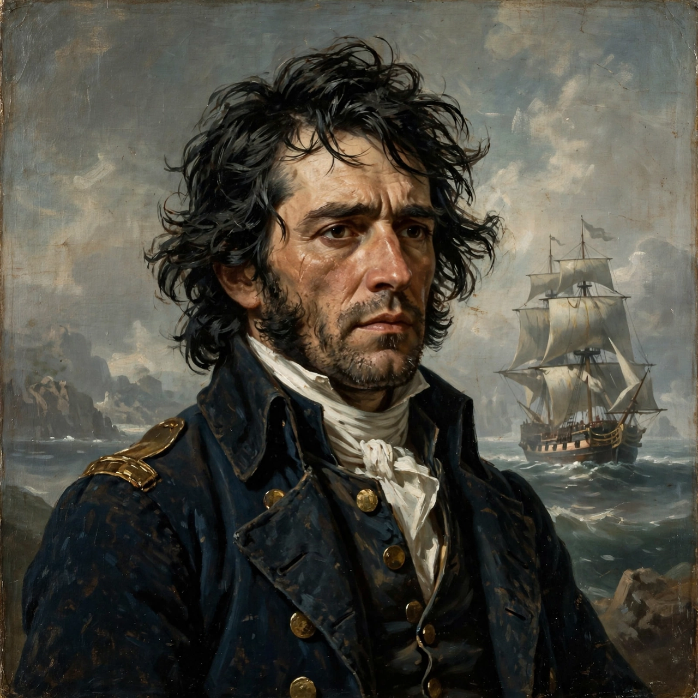

Edward John Trelawny
| Edward John Trelawny | |
|---|---|
 | |
| Born | 13 November 1792, England |
| Died | 13 August 1881 (aged 88), Sompting, Sussex, England |
| Occupation | Sailor, adventurer, writer |
| Known for | Association with Byron and Shelley; Recollections of the Last Days of Shelley and Byron |
Edward John Trelawny (13 November 1792 – 13 August 1881) was an English sailor, adventurer and writer. He is remembered chiefly for his friendship with the Romantic poets Lord Byron and Percy Bysshe Shelley, whose lives and deaths he chronicled in his memoirs, and for his somewhat embellished autobiographical novel Adventures of a Younger Son (1831).
Early life
Trelawny was born into a distinguished Cornish family fallen on reduced circumstances. Unhappy at school and at home, he volunteered for the Royal Navy as a midshipman during the Napoleonic Wars, serving in the Indian Ocean. He later claimed to have deserted and sailed with privateers and pirates in the eastern seas — exploits retold, with considerable licence, in Adventures of a Younger Son, which presented him as a romantic outlaw hero.
Byron and Shelley
In 1822 Trelawny travelled to Pisa, where he was introduced to Shelley and Byron. He became a member of their circle and was present during Shelley's last months. After Shelley's drowning in the Gulf of Spezia in July 1822, Trelawny identified the poet's badly decomposed body — recognisable, he said, by the volume of Keats's poems in the jacket pocket — and supervised the cremation of the corpse on the beach near Viareggio. According to his famous account, he snatched Shelley's heart (or a part of it) from the funeral pyre.
Trelawny accompanied Byron to Greece in 1823, supporting the Greek War of Independence. He attached himself to the klepht leader Odysseas Androutsos, married Androutsos's young half-sister Tarsitsa, and lived for a time in a cave on Mount Parnassus. In 1825 he survived an assassination attempt by an English officer, carrying the bullets in his body for the rest of his life. He was in Greece during the period of Byron's death at Missolonghi in 1824, though he was not present at the end.
Later life and writings
After years of travel, including a visit to the United States in the 1830s (where he claimed to have swum Niagara), Trelawny settled in England. His Recollections of the Last Days of Shelley and Byron (1858), revised and expanded as Records of Shelley, Byron, and the Author (1878), is a vivid, if self-aggrandising and not always reliable, source for the poets' final years. Trelawny cultivated his image as the last survivor of the Romantic circle, receiving pilgrims such as Dante Gabriel Rossetti and Algernon Charles Swinburne, who modelled aspects of their Byronic enthusiasm on him.
Trelawny died at Sompting in Sussex in 1881. In accordance with his wishes, his ashes were taken to Rome and buried in the Protestant Cemetery beside the grave of Shelley, in a plot he had purchased decades earlier next to the poet's remains.
Works
- Adventures of a Younger Son (1831)
- Recollections of the Last Days of Shelley and Byron (1858)
- Records of Shelley, Byron, and the Author (1878)